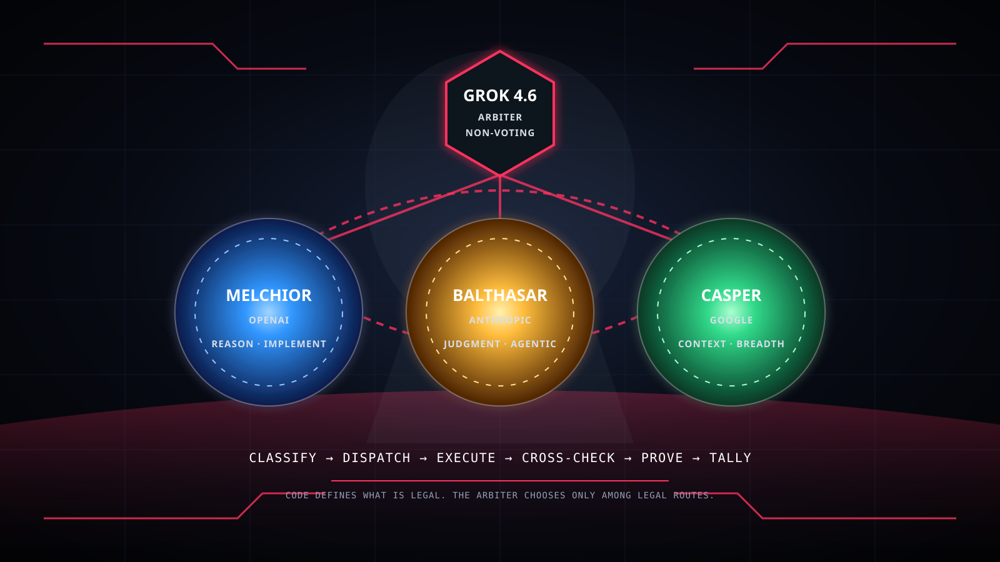

Melchior / OpenAI
Technical depth, implementation, debugging, and adversarial review. The OpenAI ladder scales from Luna through Terra and Sol to Astra for extreme work.
Three independent AI vendors build, challenge, and verify work under a fourth-vendor arbiter that cannot implement, review, verify, or vote. The model proposes. Code decides what is legal.

MAGI is not one model pretending to be a committee. Melchior, Balthasar, and Casper are vendor-separated seats. Grok sits above them only as dispatcher and mechanical arbiter.
Technical depth, implementation, debugging, and adversarial review. The OpenAI ladder scales from Luna through Terra and Sol to Astra for extreme work.
Judgment, conservative review, long-running agentic implementation, and safety. Sonnet, Fable, and Opus are selected by role rather than treated as one linear ladder.
Context, breadth, synthesis, and an intentionally decorrelated third perspective. Every agy route requires exact observed-model proof to prevent silent substitution.
Grok classifies the unit and proposes a route. The validator allows only model, effort, vendor, and role combinations admitted by the machine-readable matrix.
| Task class | Primary route | Alternates / panel |
|---|---|---|
| Architecture / extreme planning | GPT-6 Astra · high/xhigh | Claude Opus · Gemini Pro |
| Standard feature | GPT-5.6 Terra · medium | Claude Sonnet · Gemini Flash* |
| Bulk / mechanical | GPT-5.6 Luna · medium | Gemini Flash* · Claude Sonnet |
| Difficult debugging | GPT-5.6 Sol · high | Claude Fable · Gemini Pro |
| Long-running agentic work | Claude Fable · xhigh | Gemini Flash* · GPT-5.6 Sol |
| Long-context analysis | Gemini Pro | GPT-5.6 Sol · Claude Opus |
| Security-sensitive | Claude Opus · xhigh | GPT-6 Astra · Gemini Pro |
| Adversarial review | GPT-5.6 Sol / Astra | Claude Opus · Gemini Pro |
* Probe-required: a route is illegal until the actual CLI reports the exact requested model slug.
MAGI CLI validates the whole plan before spend, then re-validates every seat at the actual launch boundary. A deterministic failure cannot be waived by Grok or by a seat.